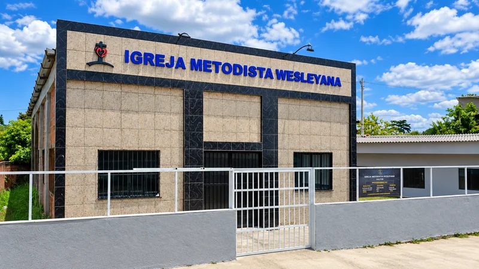

DomingosCulto de Celebração
Reúna sua família para um tempo de louvor, oração e mensagem da Palavra. Há um lugar para você.
- 19h
- Na igreja
Um lugar de fé, comunhão e esperança para você e sua família em Queimados, RJ.
Venha nos visitar. Aqui você encontra acolhimento, Palavra e uma comunidade que caminha junto.
Pastor Titular
Pr. Willyam Rocha é conhecido por seu jeito sorridente, alegre e acolhedor.
Com uma comunicação simples e próxima, dedica-se ao ensino da Palavra de Deus de forma clara e de fácil entendimento, tornando a mensagem acessível para pessoas de diferentes idades e níveis de conhecimento bíblico.
“Pastoreie as minhas ovelhas.”
João 21:16
Momentos para adorar, aprender e compartilhar a vida em comunidade.

DomingosReúna sua família para um tempo de louvor, oração e mensagem da Palavra. Há um lugar para você.
 Terças-feiras
Terças-feiras
Conheça melhor as Escrituras e converse sobre a fé no dia a dia.